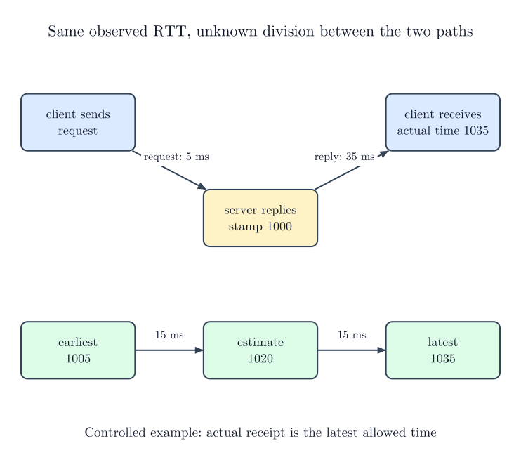
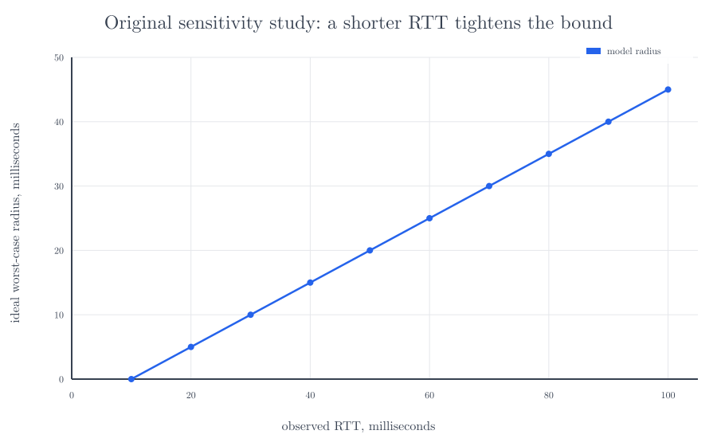
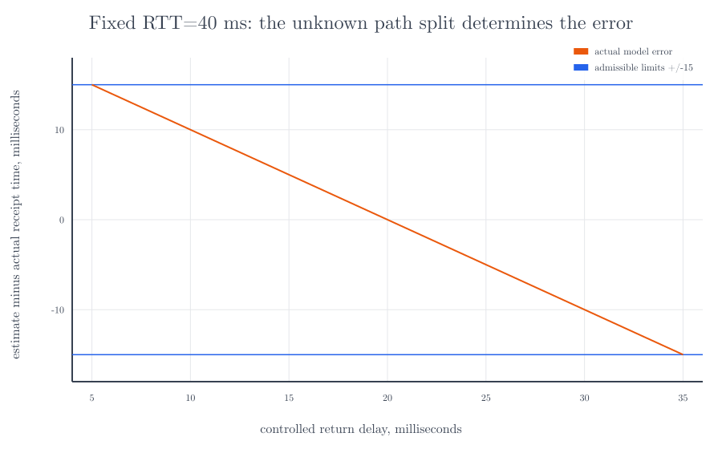

Cristian's Algorithm: Reply Timestamps, Delay Intervals and What RTT Cannot Tell Us
Abstract
A request/reply gives a client a server timestamp and an elapsed round trip, not the individual network delays. Under an accurate server and ideal-rate duration model, a common lower bound on each network leg constrains the time at receipt to an interval. Its midpoint minimizes worst-case absolute error. We retain the original server reading 1000 ms, round trip 40 ms and minimum one-way delay 5 ms, then expose controlled exchanges that attain both error extremes. Native calculations remove known server processing, retain relative and absolute intervals, and select the first smallest-radius probe after full validation. Shorter RTT tightens a conditional worst-case bound; it does not guarantee smaller realized error. Timestamp placement, clock resolution and the age of a selected observation remain essential parts of the interpretation.
Start with the timestamp event
Let a be the request's network delay, p the server's known processing duration and b the reply's network delay. The measured request-to-receipt interval is R=a+p+b. The server timestamp T_s is taken at reply departure, after p has elapsed. With an accurate ideal-rate server, its time at client receipt is T_s+b. All timestamps and durations below use milliseconds consistently.
Remove known processing to obtain δ=R−p=a+b. If both network legs are at least m≥0, then
For the original p=0, R=40, m=5 and T_s=1000, the admissible interval is [1005,1035], its midpoint is 1020 and its radius is 15. A controlled path with a=5 and b=35 attains the upper endpoint, so the midpoint error is −15. The native exchange model supplies both the calculation and the diagram.
#include <dm/dm.hpp>
int main() {
std::filesystem::create_directories("build");
const auto x=dm::algorithms::cristian_exchange(1000,5,0,35,5);
const auto& a=x.analysis;
if(a.estimate!=1020 || a.error_bound!=15 || a.lower_time!=1005 || a.upper_time!=1035 || x.model_error!=-15) return 1;
std::print("| server departure stamp | RTT | common minimum | earliest receipt | midpoint estimate | latest receipt | radius | controlled actual receipt | model error |\n| ---: | ---: | ---: | ---: | ---: | ---: | ---: | ---: | ---: |\n");
std::print("| 1000 | {} | 5 | {} | {} | {} | {} | {} | {} |\n",a.probe.round_trip_time,a.lower_time,a.estimate,a.upper_time,a.error_bound,x.receipt_time,x.model_error);
dm::graphics::Diagram d(65,1100);
dm::graphics::DiagramNodeStyle box;box.width=2.5;box.height=1.25;box.font_size=18;
box.fill={219,234,254};
d.node("send",{0,2},"client sends\nrequest",box);
d.node("receive",{8,2},std::format("client receives\nactual time {}",x.receipt_time),box);
box.fill={254,243,199};
d.node("server",{4,-.1},"server replies\nstamp 1000",box);
d.edge("send","server","request: 5 ms").edge("server","receive","reply: 35 ms");
box.fill={220,252,231};
d.node("lower",{0,-3},std::format("earliest\n{}",a.lower_time),box);
d.node("middle",{4,-3},std::format("estimate\n{}",a.estimate),box);
d.node("upper",{8,-3},std::format("latest\n{}",a.upper_time),box);
d.edge("lower","middle","15 ms").edge("middle","upper","15 ms")
.text({4,4},"Same observed RTT, unknown division between the two paths",22)
.text({4,-4.8},"Controlled example: actual receipt is the latest allowed time",19)
.save_svg("build/cristian_interval.svg");
std::print("\nOriginal helper estimate {}; original helper radius {}.\n",dm::algorithms::cristian_estimate(1000,40),dm::algorithms::cristian_error_bound(40,5));
}| server departure stamp | RTT | common minimum | earliest receipt | midpoint estimate | latest receipt | radius | controlled actual receipt | model error |
|---|---|---|---|---|---|---|---|---|
| 1000 | 40 | 5 | 1005 | 1020 | 1035 | 15 | 1035 | -15 |
Original helper estimate 1020; original helper radius 15.

Derive the midpoint and its bound
For any candidate return-delay estimate c in [m,δ−m], its worst-case absolute error is max(c−m,δ−m−c). This is minimized when the two terms are equal, giving c=δ/2 and radius ε=δ/2−m. The ideal midpoint time and error are
Symmetry a=b makes the corrected midpoint exact in this ideal model. The interval bound itself does not assume symmetry: it follows from nonnegative delays and the assumed lower bound. With no defensible positive m, use zero. The minimum observed in a finite measurement sample is not automatically a valid universal lower bound on future network delays.
If the server stamp were instead at request arrival, receipt time would be T_s+p+b and the corrected midpoint would add (R+p)/2. This API deliberately uses reply-departure stamps, so applying it to arrival stamps without changing the timestamp convention would create a bias. Ignoring known processing in the departure-stamp formula adds a bias p/2 even on symmetric network paths. When processing is unknown and nonnegative, treating it as part of the outbound leg still gives the conservative uncorrected interval, provided the two network legs meet the stated minimum; it does not restore symmetry of those combined legs.
Retain the original RTT sweep
The following independent observations hold m=5 and p=0 fixed, and vary R from 10 to 100. They are a sensitivity study, not a chronological network trace. R must be at least 2m: otherwise the assumptions contradict the observation. At R=2m, both network legs are forced to equal m and the ideal interval has zero width. Returning zero for R<2m would instead manufacture false certainty; datamunge now rejects that case.
#include <dm/dm.hpp>
int main() {
std::filesystem::create_directories("build");
std::vector<double> rtts,bounds;
std::print("| RTT, ms | native ideal radius, ms | receipt-time estimate, ms |\n| ---: | ---: | ---: |\n");
for(int r=10;r<=100;r+=10) {
const auto a=dm::algorithms::cristian_analyze({1000,static_cast<double>(r),5,0});
if(a.error_bound!=(r-10)/2.) return 1;
rtts.push_back(r);bounds.push_back(a.error_bound);
std::print("| {} | {} | {} |\n",r,a.error_bound,a.estimate);
}
auto plot=dm::graphics::RPlot::create();
plot.line(rtts,bounds,"model radius",{37,99,235},2.5)
.points(rtts,bounds,"",{37,99,235},4)
.title("Original sensitivity study: a shorter RTT tightens the bound")
.x_label("observed RTT, milliseconds").y_label("ideal worst-case radius, milliseconds")
.x_limits(0,105).y_limits(0,50).size(900,560)
.save_svg("build/cristian.svg");
}| RTT, ms | native ideal radius, ms | receipt-time estimate, ms |
|---|---|---|
| 10 | 0 | 1005 |
| 20 | 5 | 1010 |
| 30 | 10 | 1015 |
| 40 | 15 | 1020 |
| 50 | 20 | 1025 |
| 60 | 25 | 1030 |
| 70 | 30 | 1035 |
| 80 | 35 | 1040 |
| 90 | 40 | 1045 |
| 100 | 45 | 1050 |

Equal RTT does not identify the actual error
Hold R=40, p=0 and m=5. Let b range from 5 to 35, with a=40−b. Every case produces the same server-based midpoint 1020 and radius 15, yet its actual ideal error runs from +15 through zero to −15. The native controlled exchange computes these cases rather than a report-side synchronization loop.
#include <dm/dm.hpp>
int main() {
std::filesystem::create_directories("build");
std::vector<double> returns,errors;
std::print("| outbound, ms | return, ms | observed RTT, ms | ideal bound, ms | actual model error, ms |\n| ---: | ---: | ---: | ---: | ---: |\n");
for(int b=5;b<=35;++b) {
const auto x=dm::algorithms::cristian_exchange(1000,40-b,0,b,5);
if(x.analysis.error_bound!=15 || std::abs(x.model_error)>15) return 1;
returns.push_back(b);errors.push_back(x.model_error);
if(b%5==0) std::print("| {} | {} | {} | {} | {} |\n",x.outbound_delay,x.return_delay,x.analysis.probe.round_trip_time,x.analysis.error_bound,x.model_error);
}
auto plot=dm::graphics::RPlot::create();
plot.line(returns,errors,"actual model error",{234,88,12},2)
.abline_h(15,{37,99,235},1.5).abline_h(-15,{37,99,235},1.5)
.legend({"actual model error","admissible limits +/-15"},{{234,88,12},{37,99,235}})
.title("Fixed RTT=40 ms: the unknown path split determines the error")
.x_label("controlled return delay, milliseconds").y_label("estimate minus actual receipt time, milliseconds")
.x_limits(4,36).y_limits(-18,18).size(900,560)
.save_svg("build/cristian_asymmetry.svg");
const auto slow=dm::algorithms::cristian_exchange(1000,20,0,20,5);
const auto fast=dm::algorithms::cristian_exchange(1000,5,0,15,5);
if(!(fast.analysis.error_bound<slow.analysis.error_bound && std::abs(fast.model_error)>std::abs(slow.model_error))) return 1;
std::print("\nSymmetric RTT=40: radius {}, actual error {}. Asymmetric RTT=20: radius {}, actual error {}.\n",slow.analysis.error_bound,slow.model_error,fast.analysis.error_bound,fast.model_error);
}| outbound, ms | return, ms | observed RTT, ms | ideal bound, ms | actual model error, ms |
|---|---|---|---|---|
| 35 | 5 | 40 | 15 | 15 |
| 30 | 10 | 40 | 15 | 10 |
| 25 | 15 | 40 | 15 | 5 |
| 20 | 20 | 40 | 15 | 0 |
| 15 | 25 | 40 | 15 | -5 |
| 10 | 30 | 40 | 15 | -10 |
| 5 | 35 | 40 | 15 | -15 |
Symmetric RTT=40: radius 15, actual error 0. Asymmetric RTT=20: radius 5, actual error -5.

The slower symmetric exchange has zero actual error, whereas the faster asymmetric exchange has error −5. Its smaller bound is still useful; it simply answers a worst-case question rather than revealing the hidden path split.
Known processing, probe choice and timestamp resolution
With equal processing and minimum assumptions across probes, minimizing RTT also minimizes the radius. If those assumptions vary, minimize the calculated radius instead. The next independent observations include a 30 ms server residence duration. Probes 1 and 2 tie at radius zero, and the selection API retains index 1 as the first minimum, even though probe 2 has the smallest raw RTT. These different server stamps refer to different receipt instants; choosing one does not magically advance its old estimate to the present.
#include <dm/dm.hpp>
int main() {
const auto s=dm::algorithms::cristian_select({{1000,20,5,0},{2000,40,5,30},{3000,10,5,0}},3);
if(!s.has_probe || s.index!=1 || s.probes[1].estimate!=2005) return 1;
std::print("| probe | raw RTT | known processing | network RTT | minimum | radius | estimate at this probe's receipt |\n| ---: | ---: | ---: | ---: | ---: | ---: | ---: |\n");
for(std::size_t i=0;i<s.probes.size();++i) {
const auto& a=s.probes[i];
std::print("| {} | {} | {} | {} | {} | {} | {} |\n",i,a.probe.round_trip_time,a.probe.server_processing,a.network_round_trip,a.lower_delay,a.error_bound,a.estimate);
}
std::print("\nFirst minimum-radius probe index {}. Its timestamp is at its own receipt, not a later present.\n",s.index);
const auto processed=dm::algorithms::cristian_exchange(1000,20,10,20,5);
if(processed.analysis.estimate!=1020 || dm::algorithms::cristian_estimate(1000,50)!=1025) return 1;
std::print("Symmetric 20+20 network paths and 10 processing: corrected {}, uncorrected {}.\n",processed.analysis.estimate,dm::algorithms::cristian_estimate(1000,50));
const auto large=dm::algorithms::cristian_analyze({1e16,1,0,0});
if(large.lower_time!=large.upper_time || large.error_bound!=.5 || large.upper_delay!=1) return 1;
std::print("Rounded epoch endpoints coincide: {}; relative delay interval remains [{},{}], nominal radius {}.\n",large.lower_time==large.upper_time,large.lower_delay,large.upper_delay,large.error_bound);
bool impossible=false,capped=false,late_invalid=false;
try { (void)dm::algorithms::cristian_error_bound(8,5); }
catch(const std::invalid_argument&) { impossible=true; }
try { (void)dm::algorithms::cristian_select({{0,2,0,0},{0,4,0,0}},1); }
catch(const std::length_error&) { capped=true; }
try { (void)dm::algorithms::cristian_select({{0,2,0,0},{0,4,3,0}},1); }
catch(const std::invalid_argument&) { late_invalid=true; }
if(!impossible || !capped || !late_invalid) return 1;
std::print("Impossible minimum rejects; complete cap rejects; invalid later probe validates before cap: pass.\n");
}| probe | raw RTT | known processing | network RTT | minimum | radius | estimate at this probe's receipt |
|---|---|---|---|---|---|---|
| 0 | 20 | 0 | 20 | 5 | 5 | 1010 |
| 1 | 40 | 30 | 10 | 5 | 0 | 2005 |
| 2 | 10 | 0 | 10 | 5 | 0 | 3005 |
First minimum-radius probe index 1. Its timestamp is at its own receipt, not a later present. Symmetric 20+20 network paths and 10 processing: corrected 1020, uncorrected 1025. Rounded epoch endpoints coincide: true; relative delay interval remains [0,1], nominal radius 0.5. Impossible minimum rejects; complete cap rejects; invalid later probe validates before cap: pass.
The absolute fields use ordinary double rounding, not outward-rounded interval arithmetic. At epoch 10^16 in the chosen unit, adding a delay between zero and one can round both endpoints to the same stored timestamp even though the model interval has width one. Separate delay fields preserve the relevant sub-epoch quantities here. The output is a nominal calculation, not an IEEE-754 enclosure certificate. Positive half-durations or radii that collapse to zero are rejected rather than presented as exact zero uncertainty.
All observations require finite values, nonnegative durations, processing no larger than RTT and a feasible common delay minimum. Absolute outputs must fit finite doubles. Controlled exchanges reject path delays below the assumed minimum and cases where rounding hides positive network duration behind the processing duration. The original helper signatures and clock_synchronization.hpp include path remain available, with valid original numbers unchanged.
Selection validates every observation and its derived outputs before the complete default 100,000-probe cap or allocation. A zero cap disables only that cap; container/allocation limits remain. It retains all owned analyses, the first minimum index and an explicit false existence flag for empty input. It makes two linear passes, using O(n) time/storage. Single-observation calculations take O(1). The library performs no network I/O or operating-system clock changes and does not choose between stepping a clock backwards and slewing its rate. Drift, server clock uncertainty, timestamping overhead and aging an old probe to a new instant require an extended model; they are not silently included in this radius.
No external dataset is needed for the original arithmetic and controlled counterexamples. Native tests cover 27,004 integer path/processing/minimum combinations, 10,000 exact binary-fraction controls, both extremal errors, selection ties/ownership, every original sweep row, invalid and contradictory inputs, complete budgets, underflow/overflow and coarse epoch resolution. The same focused cases run under address and undefined-behavior sanitizers.
Reference and scope
F. Cristian (1989), [Probabilistic clock synchronization](https://doi.org/10.1007/BF01784024), Distributed Computing 3, 146–158; [open paper copy](https://www.cs.cornell.edu/courses/cs5414/2017fa/papers/Cristian.pdf). The original treatment includes bounded clock drift and a broader probabilistic time service. This report derives an ideal-rate one-server observation model and a known-residence correction, not the whole original protocol or an NTP implementation. Its intervals depend on trustworthy stated assumptions; they are neither measured confidence intervals nor a claim of perfect physical clocks.